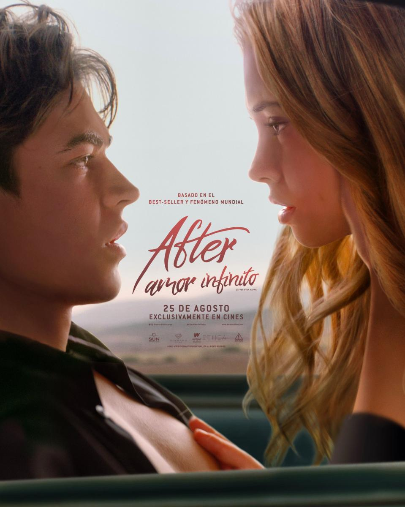

After: Amor Infinito
2022
Una pareja debe decidir si continuar con su relacion, apasionada pero toxica, o hacer cambios dramaticos en sus vidas.
Audio: Latino
Director: Castille Landon
Elenco: Josephine Lagfortd, Hero Fiennes-Tiffin, Carter Jenkins, Arielle Kebbel, Kiana Madeira
Género: Romance, Drama
calificacion: 7/10